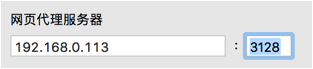

安装squid
proxy就是软件代理或者代理服务器，而squid就是一种常用的proxy服务
1、安装squid
[root@localhost wj]# rpm -qa | grep squid
[root@localhost wj]# yum install -y squid
Installed:
squid.i686 7:3.1.10-19.el6_4
Complete!
[root@localhost wj]#
2、设置防火墙，squid默认使用3128端口，用户可以自行修改一些不冲突的端口，之后要在防火墙中添加端口
[root@localhost wj]# gedit /etc/sysconfig/iptables
-A INPUT -m state --state NEW -m tcp -p tcp --dport 3128 -j ACCEPT
[root@localhost phpMyAdmin]# service iptables restart
iptables：将链设置为政策 ACCEPT：filter nat [确定]
iptables
：将链设置为政策
ACCEPT
：
filter nat [
确定
]
iptables：清除防火墙规则： [确定]
：清除防火墙规则：
[
iptables：正在卸载模块： [确定]
：正在卸载模块：
iptables：应用防火墙规则： [确定]
：应用防火墙规则：
iptables：载入额外模块：nf_conntrack_ftp [确定]
：载入额外模块：
nf_conntrack_ftp [
[root@localhost phpMyAdmin]#
3、启动squid服务
[root@localhost wj]# service squid start
正在启动 squid：. [确定]
正在启动
squid
. [
4、测试，在浏览器中设置http代理为Linux的ip，端口号3128

随便打开一个网站，可以看到还是能正常访问，说明配置成功
Copyright@david zhytwj2018@163.com